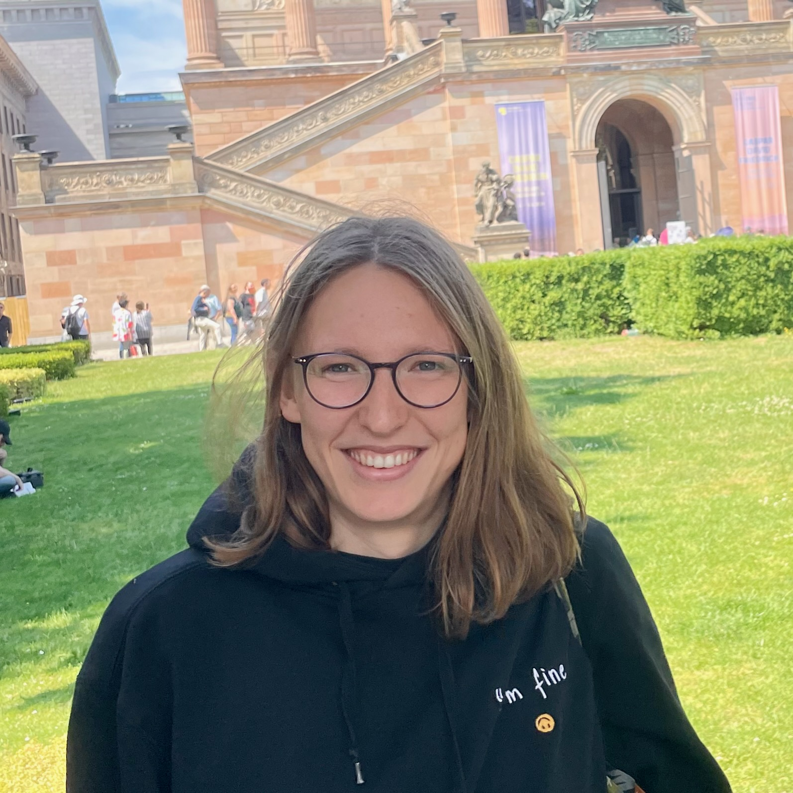

Anna Hofer
Ph.D. candidate in combinatorial and computational commutative algebra
My research lies at the intersection of combinatorics, commutative algebra, and computation, with a focus on developing algorithms and software for computations in commutative algebra.

● About
I am a Ph.D. student at Otto von Guericke University Magdeburg in Thomas Kahle's research group, funded by the DFG priority program Combinatorial Synergies. I obtained both my Bachelor's and Master's degrees at OvGU under the supervision of Thomas Kahle.
My research focuses on combinatorial and computational commutative algebra. In particular, I am interested in combinatorial structures that provide insight into algebraic objects, as well as in the development of algorithms and software for computations in commutative algebra.
Outside of maths, I love sport — especially running, cycling, swimming, and climbing. I also enjoy learning languages and reading.
● Research
- Preprint · 2026 Trinomial containment in polynomial ideals is undecidable
● Software
Open-source contribution
Injective resolutions & local cohomology in OSCAR
I implemented the computation of injective resolutions and local cohomology over normal affine semigroup rings in OSCAR, the Julia-based computer algebra system. The functionality is now part of OSCAR. Joint work with Thomas Kahle.
● Upcoming activities
- 14–16 Sep 2026 SPP Annual Conference, Frankfurt
● Past activities
- 13–17 Jul 2026 Software presentation · ISSAC 2026, Oldenburg (extended abstract, slides)
- 4–8 May 2026 Co-organizer · Young Researchers Conference on Combinatorial Synergies, FU Berlin (with Matt Dupraz and Léo Mathis)
- 20–28 Mar 2026 Combinatorial Coworkspace, Kleinwalsertal, Austria
- 26–30 Jan 2026 Algebraic Topology: Methods, Computation, and Science, MPI Leipzig
- 23 Jun – 4 Jul 2025 SLMath Summer School: New perspectives on discriminants and their applications, MPI Leipzig
- 26–30 May 2025 Workshop on the Applications of Commutative Algebra, The Fields Institute, Toronto
- 24–28 Mar 2025 Algebraic Statistics 2025, Munich
- 19–21 Mar 2025 Talk (Computing Injective Resolutions and Local Cohomology) · Combinatorial Synergies East, MPI Leipzig
- 11–13 Sep 2024 Kick-Off Combinatorial Synergies, Osnabrück
- 13–14 Dec 2022 Macaulay2 Bootcamp, MPI Leipzig
- 13–15 Jun 2022 75+80=155 years of commutative algebra, Osnabrück